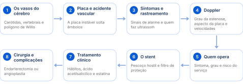
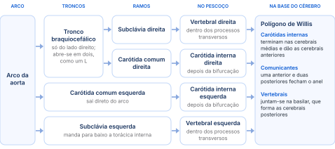
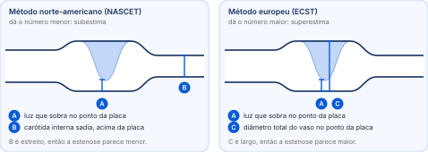
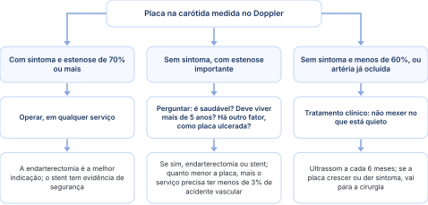

Da placa na bifurcação da carótida ao Doppler, aos grandes estudos e à escolha entre tratamento clínico, endarterectomia e stent.
Material de estudo da aula, com a linguagem ajustada para leitura autônoma. A legenda de cores está na página 2.

Em palavras simples. O cérebro recebe sangue por quatro artérias: as duas carótidas, na frente do pescoço, e as duas vertebrais, por dentro da coluna. Lá em cima elas se ligam num anel, o polígono de Willis; se uma fecha, as outras podem manter o fluxo.
Qualquer situação que diminua o sangue que chega ao cérebro pode interromper o fluxo de forma crônica, mais rara, ou aguda, que é o acidente vascular cerebral. Para se proteger, o cérebro tem uma circulação muito bem montada: quatro vasos chegam até ele.
Do arco da aorta saem os troncos supra-aórticos, nesta ordem: o tronco braquiocefálico, à direita; a artéria carótida comum esquerda; e a artéria subclávia esquerda. O tronco braquiocefálico se divide em dois, como um L: a subclávia direita vai para o lado e a carótida comum direita sobe. De cada subclávia sai a artéria vertebral, para cima; a subclávia esquerda manda também, para baixo, a artéria torácica interna.
A artéria vertebral tem um trajeto curioso: passa por dentro dos ossos, pelos processos transversos das vértebras do pescoço. A carótida, não.

Esquema dos vasos que levam sangue ao cérebro, da esquerda (arco da aorta) para a direita (base do cérebro). A placa costuma se instalar na bifurcação da carótida comum.
As carótidas internas terminam como artérias cerebrais médias e dão as cerebrais anteriores, unidas pela comunicante anterior. As comunicantes posteriores ligam esse sistema à artéria basilar, que vem das vertebrais e forma as cerebrais posteriores. O conjunto parece um pentágono e é uma circulação colateral presente em quase todos: se um vaso se perde, os outros mantêm o fluxo.
Como a cerebral média continua a carótida interna, boa parte dos acidentes vasculares prejudica o movimento ou a sensibilidade do membro do lado oposto.
Já houve paciente com uma só carótida aberta e todos os outros vasos fechados, ou só com as duas vertebrais abertas, vivo e quase normal, graças a essa rede. Provavelmente com as funções cognitivas um pouco prejudicadas.
Ao abrir o pescoço para tirar uma placa da carótida, há muito tecido nobre por perto: a veia jugular, o nervo hipoglosso, que controla a língua e é um dos mais lesados nessa cirurgia, e o nervo laríngeo recorrente, que controla a voz. Uma lesão deles traz problemas para o paciente (lista completa no capítulo 08).
“Para você tratar carótida, tem que ser bom de anatomia.”
Em palavras simples. A placa de gordura que cresce na bifurcação da carótida pode inflamar, abrir e soltar pedaços que entopem artérias do cérebro. Como o cérebro gasta muita energia, pouco tempo sem sangue já o apaga; o resultado vai de uma sequela localizada até a morte.
O cérebro é um órgão de alto consumo: com um pouco menos de sangue, ele já apaga. Comprimir as duas carótidas por cerca de 10 segundos escurece a vista, como ao levantar com a pressão baixa (brincadeira perigosa, que não se deve fazer).
Assim, o acidente vascular pode deixar uma sequela focal, em que a pessoa perde a fala ou o movimento, ou um dano extenso, até a morte. Na anatomia patológica, aparecem o infarto cerebral extenso e a carótida ocluída por placa e trombo, ao lado da carótida pérvia.
Até os anos 50, o tratamento da doença carotídea era um desastre: as pinças e os clampes eram grosseiros, e a heparina só chegou depois da Segunda Guerra Mundial, então o vaso clampeado trombosava. A partir dos anos 50 os resultados melhoraram, mas a cirurgia era indicada para quase todo mundo com placa, sem a pergunta que os estudos responderiam depois: operar todos ajuda todos?
“O acidente vascular quase sempre não mata e deixa a pessoa incapacitada: alguém que não trabalha, precisa de cuidador, de fralda. Quem já teve um avô, uma avó, a mãe ou o pai assim em casa sabe como é triste. Eu não gostaria para mim.”
Há vários níveis: o ataque isquêmico transitório, que se recupera em até 24 horas, os acidentes menores e os maiores. O acidente vascular hemorrágico não entra nesta aula, que trata só do isquêmico. E os êmbolos que causam o isquêmico podem vir de vários pontos:
Quando o coágulo chega ao cérebro, começa a hora de ouro: se a pessoa chega a tempo a um hospital preparado e recebe o trombolítico, pode se recuperar e até ficar curada. Fora desse prazo, a sequela tende a ficar.
A doença carotídea é uma das causas de acidente vascular mais passíveis de prevenção. A maior parte das placas fica na bifurcação da carótida, fácil de examinar com ultrassom, um exame barato e sem incômodo para o paciente.
Com o tempo, a placa inflama e complica. A estável raramente dá problema. O perigo é a placa que cresce e fica instável: rica em lipídios, ela pode ulcerar ou romper, expor o seu conteúdo e soltar êmbolos para o cérebro.
Os fatores de risco são o tabagismo, o diabetes, a hipertensão e, principalmente, a dislipidemia. São os mesmos de outras doenças das artérias, como o aneurisma da aorta; por isso a mesma família pode ter as duas, com um componente genético difícil de explicar.
Em palavras simples. Perder a visão, a força de um lado do corpo, a simetria da boca ou a coordenação são sinais de alarme. Mesmo sem nenhuma queixa, quem tem mais de 55 anos e dois fatores de risco já pode fazer o ultrassom das carótidas.
Quando a placa começa a dar sintomas, a ideia de tratá-la ganha força. Por isso o médico fica de olho nos sinais neurológicos.
Perda da visão, plegia (paralisia) de um membro, desvio da rima labial (a boca torta).
Dificuldade de coordenação, como no acidente vascular do cerebelo.
A mãe do Dr. Jeferson, aos 92 anos e com a cabeça muito boa, teve um acidente vascular do cerebelo. O estrago impressiona: perdeu a coordenação, sobretudo da mão direita, a dominante, e não consegue fazer as próprias tarefas.
Ultrassom autorizado mesmo sem sopro e sem sintomas. Com sopro no pescoço, a indicação é maior.
Com sintoma e placa acima de 70%, não há discussão: opera-se (capítulo 05). A dúvida é a placa importante em quem não tem sintoma: uma corrente de médicos só acompanha e espera o sintoma; outra opera. A maioria das pessoas preferiria eliminar a placa, mas a cirurgia não é isenta de risco. Depois de centenas de endarterectomias sem nenhum acidente vascular, o Dr. Jeferson viu o primeiro numa angioplastia: “Doutor, minha mão não está mexendo”. O braço ficou plégico; o quadro reverteu sozinho e a paciente se recuperou bem.
“Só não tem complicação os mentirosos que não fazem. A cirurgia não é isenta de risco: você vai trocar uma possibilidade por uma certeza.”
Em palavras simples. O ultrassom com Doppler mostra a placa, mede quanto ela fecha a artéria, diz se ela é perigosa e mede a velocidade do sangue no aperto. Se ainda houver dúvida, ou se o tratamento for pelo stent, faz-se um exame com contraste.
Com o transdutor linear, examina-se toda a carótida que se consegue ver, da clavícula até o ângulo da mandíbula. Se há placa, ela é medida.
Mede-se também o espessamento médio-intimal, a espessura das camadas íntima e média da parede. Quanto mais espessa, maior a chance de problemas cardiovasculares: é um marcador de doença cardiovascular e mostra se o paciente segue o tratamento, toma os remédios e mantém o colesterol controlado.
Os dois métodos levam o nome de grandes estudos, e o mesmo exame dá números diferentes em cada um. O norte-americano (NASCET) compara a luz que sobra na placa com o diâmetro da carótida interna sadia, livre de doença: dá o número menor, subestima. O europeu (ECST) compara a luz que sobra com o diâmetro máximo do vaso no ponto da placa: dá o número maior, superestima.

Exemplo com números: luz que sobra de 2 mm, carótida interna sadia de 4 mm e vaso de 8 mm no ponto da placa. Pelo método norte-americano, sobram 2 de 4: estenose de 50%. Pelo europeu, sobram 2 de 8: estenose de 75%.
Achar que tanto faz o método. Dependendo de quem faz a avaliação, o número muda: o europeu sempre dá mais que o norte-americano para a mesma placa.
No começo, só se media a estenose; depois, passaram a contar as características da placa. A úlcera aumenta o risco de embolização e aparece com diferença de cor. Áreas escuras por dentro indicam placa mais lipídica, mole, com mais chance de ulcerar e embolizar. Já a placa homogênea e regular, de borda bem visível, permite esperar até o limite com tranquilidade; na placa com úlcera ou área mole, pode-se ser mais agressivo mais cedo (tabela no capítulo 02).
O fluxo confirma a imagem: não adianta a imagem mostrar estenose se o fluxo não acompanha. A velocidade é medida no ponto mais apertado da placa, onde há mais turbilhonamento, e comparada com uma tabela. No exame mostrado em aula, a carótida interna tinha 288 cm/s na sístole e 38 cm/s na diástole. A linha de corte é a estenose de 70% ou mais, definida por três critérios.
A relação é a velocidade sistólica da carótida interna dividida pela da carótida comum. Exemplo: 400 cm/s na interna e 100 cm/s na comum dá 4, placa de 70%.
Confiar só na imagem. A estenose vista na imagem precisa ser confirmada pelo fluxo, e a relação entre a interna e a comum deve ser testada sempre.
Quando o Doppler deixa dúvida, passa-se aos exames contrastados. Eles são fundamentais antes do tratamento endovascular: o stent chega à placa navegando desde a virilha, e é preciso conhecer o caminho até a bifurcação, o tipo de arco da aorta e as tortuosidades. A endarterectomia pode ser feita só com o ultrassom; a angioplastia, raramente.
Em palavras simples. Operar só vale a pena se o risco de acidente vascular da própria cirurgia for menor que o de deixar a placa. Para quem tem sintoma e estenose de 70% ou mais, operar sempre ganha; para quem não tem sintoma, depende de o serviço operar muito bem.
Achada a placa, o paciente vai para o tratamento clínico ou para o cirúrgico. Os dois critérios principais são ter ou não sintomas e o grau de estenose. Por trás deles está o risco de acidente vascular: a cirurgia tem o seu risco, e o risco de acidente com a placa precisa ser maior para a operação compensar.
Exigência para operar placa menor em quem não tem sintoma.
É difícil chegar lá. A taxa do Dr. Jeferson está em 1%: mais um caso a leva a 2%, e um acidente silencioso que tenha passado sem ser percebido a deixaria maior. Além disso, a maioria dos serviços que operam carótida são de residência, ainda na curva de aprendizado, quando o acidente vascular é mais frequente. E a doença é comum: até 8% da população idosa pode ter placa na carótida.
A partir dos anos 50 se operava muito; nos anos 80 surgiu a pergunta: operar está fazendo bem ou mal? Três estudos responderam. O ACAS e o ACST estudaram pacientes sem sintomas; o NASCET, pacientes com sintomas.
Essa é a grande diferença do NASCET: com sintoma e estenose acima de 70%, a cirurgia reduz o acidente vascular em 65%, e não importa se o serviço é bom. Pode ser qualquer um: tirar essa placa traz benefício, independentemente do risco do serviço.
“Tem que operar todo mundo que é sintomático e que tem estenose acima de 70%. Acabou a discussão.”
Nos dois estudos de pacientes sem sintomas, a cirurgia só venceu porque os serviços eram de ponta, com morbimortalidade em torno de 3%. Serviço bom, ali, era o que fazia duas ou três endarterectomias por dia, como nos Estados Unidos; no Brasil, nem os serviços de ponta chegaram a isso.
Ler o ACAS como “todo paciente sem sintoma com placa acima de 60% deve operar”. A conclusão tem uma condição: o serviço precisa ter morbimortalidade bem baixa. Sem ela, o risco da cirurgia apaga o benefício.
Em palavras simples. O stent trata a placa por dentro da artéria, sem abrir o pescoço. O primeiro estudo o mostrou parecido com a cirurgia, mas havia truque nos números; ele ficou reservado ao pescoço difícil de operar, até o filtro de proteção melhorar os resultados.
A cirurgia aberta gasta pouco material (um shunt e um remendo de pericárdio) e muito trabalho humano; o stent custava, na época, cerca de R$ 20 mil. Com esse valor agregado, a pressão da indústria para usá-lo cresceu. Um estudo dos anos 2000 mostrou angioplastia e endarterectomia com morbimortalidade parecida.
Duas coisas chamam a atenção. Primeiro, o número de pacientes: cerca de 300, contra uns 3.000 dos estudos anteriores. Segundo, a morbimortalidade da endarterectomia ficou acima dos 3% dos estudos dos anos 80 e 90, o que fez a angioplastia parecer aceitável.
“Estatística: a arte de maquiar os dados. Qual é a maior crítica desse estudo que está tentando enganar vocês?”
O lado bom: o estudo mostrou que a angioplastia é factível na doença carotídea, embora com risco maior. Por isso, ela passou a ser usada só para alguns pacientes.
Por muito tempo, a indicação da angioplastia foi o pescoço hostil, difícil de operar. Quem já fez cirurgia de câncer no pescoço e radioterapia, por exemplo, ganha um stent.
Com dispositivos melhores, surgiu o filtro de proteção cerebral, uma espécie de cesta colocada antes da angioplastia, e os resultados melhoraram muito. Há quem ainda ache os dados maquiados, mas o risco visto nesse estudo, em torno de 4%, não está tão longe dos 3% do passado. E esse aumento tem explicação.
Por que o risco teria aumentado? Uma explicação é a formação. Antes, quem fazia Medicina gostava de “sangue na cara”, e havia poucos alunos, que entravam em estágio desde o primeiro ano. Hoje, só cerca de 15% da turma já entrou numa cirurgia. E, quanto mais angioplastias se fazem, menos endarterectomias o residente aprende.
“Se eu sou residente e faço 20 angioplastias e uma endarterectomia, cadê minha curva de aprendizado?”
Em palavras simples. Quase todo paciente com placa recebe o mesmo tripé: mudar os hábitos, tomar ácido acetilsalicílico e uma estatina forte, com o colesterol bem baixo. Ele repete o ultrassom a cada seis meses e só vai para a cirurgia se a placa crescer ou der sintoma.
Quem vai fazer medicina séria precisa lidar com as diretrizes, os guidelines: elas existem para tomar a melhor decisão para o paciente.
O algoritmo da diretriz deve ser seguido na prática diária. Onde ele é claro, não há discussão: com sintoma e estenose de 70%, operar, e a endarterectomia ainda é o melhor para o paciente, embora o stent tenha evidência de segurança; sem sintoma e com menos de 60%, ou com a artéria ocluída, tratamento clínico. Sem sintoma e com lesão importante, decidem três perguntas.

Achar que a artéria ocluída precisa de cirurgia. “Se ocluiu e não aconteceu nada, ele vai tomar remédio; não vai mexer naquilo que está quieto.”
O tratamento clínico, a best medical therapy (melhor terapia clínica), se apoia em três pernas: mudança do estilo de vida, ácido acetilsalicílico e estatina.
Parar de fumar, atividade física, alimentação e peso; controlar diabetes e pressão.
Ácido acetilsalicílico; em caso de alergia, clopidogrel.
De alta potência: atorvastatina ou rosuvastatina.
Uso discutível, mas a maioria usa: o infantil, um comprimido por dia.
Um controle glicêmico rigoroso seria até melhor.
Os novos remédios para emagrecer, como o Mounjaro (tirzepatida), talvez tragam benefício nos próximos anos, porque as pessoas emagrecem e o colesterol cai. A pressão também precisa ficar controlada.
O ponto mais difícil do tratamento clínico é manter os lipídios baixos. A meta é dada pelo LDL (lipoproteína de baixa densidade) e depende do risco do paciente:
No paciente de alto risco, a estatina precisa ser de alta potência. As duas mais usadas são a atorvastatina e a rosuvastatina.
Responder sinvastatina. Ela não é de alta potência: é muito usada no Brasil porque está amplamente disponível no Sistema Único de Saúde. Como tem pouca potência, usa-se dose alta, 40 mg, com muito efeito colateral.
Sinvastatina em dose alta; ezetimiba associada.
Se a placa cresceu ou apareceu sintoma, a história muda: o paciente sai do conforto do tratamento clínico e vai para a cirurgia, endarterectomia ou angioplastia.
Em palavras simples. Na endarterectomia, o cirurgião abre o pescoço e tira a placa; na angioplastia, a placa é amassada por um stent levado pela virilha, com um filtro que segura os pedaços. A longo prazo, as duas dão o mesmo resultado; a escolha depende do pescoço, da aorta e da idade.
Ao retirar a placa, fica uma superfície desnuda, sem endotélio, com o colágeno da média exposto. O sangue que encosta ali coagula. Por isso a endarterectomia só é factível graças à heparina: sem ela, a cascata da coagulação segue, forma-se fibrina e depois o trombo, justamente o que causa o acidente vascular.
E por que o remendo? A área operada sofre uma reação inflamatória intensa; se o vaso fosse só suturado, estenosaria no pós-operatório. O remendo já aumenta o diâmetro.
Parece mais simples, mas hoje só é factível por causa do filtro de proteção cerebral.
A longo prazo, as duas têm o mesmo resultado. A decisão tem duas etapas: primeiro, separar quem vai para a cirurgia; depois, escolher entre a aberta e a endovascular.
Pesa também a formação do médico: há quem só faça a técnica endovascular porque só treinou nela. O ideal é escolher a melhor indicação e, se a técnica não for o forte do cirurgião, chamar um colega que a faça bem.
“Essa é a melhor decisão: a que agrada mais o paciente, não o médico.”
Hoje a escolha vai muito do bom senso: os critérios clássicos perderam força e, com stents e filtros, as duas técnicas têm a mesma qualidade de resultado. O que continua valendo cabe numa frase:
“Tem um pescoço hostil? A endovascular é uma boa opção. Tem um pescoço anatomicamente favorável? A endarterectomia pode ser uma melhor opção.”
Aqui não há muito consenso. A maioria das placas fica na origem da artéria vertebral. A cirurgia aberta é péssima nesse território, por isso o tratamento costuma ser endovascular, e a conduta tende a ser mais conservadora.
A aula começou com um caso real: uma paciente já operada, com estenose crítica nas duas vertebrais, à espera do parecer sobre ir ou não para a cirurgia.
Os pontos de prova e os números da aula, na ordem da trilha.
Placa instável (lipídica, mole, ulcerada) emboliza; a estável, homogênea e regular, raramente dá problema e pode esperar.
Ataque isquêmico transitório recupera em até 24 horas; a carótida dá cerca de 30% dos êmbolos (o resto, sobretudo o coração). Rastreamento: mais de 55 anos e dois fatores de risco, mesmo sem sopro.
Método norte-americano (NASCET) subestima; europeu (ECST) superestima. Estenose de 70% ou mais: sistólica acima de 230 cm/s, diastólica acima de 100 cm/s e relação interna ÷ comum maior que 4, a mais importante.
Exame contrastado é fundamental antes do stent. Angiotomografia é a mais usada; angiografia com subtração digital é o padrão-ouro.
Com sintoma e estenose de 70% ou mais: operar, em qualquer serviço (NASCET: 65% menos acidente vascular).
Sem sintoma: cirurgia só em serviço com morbimortalidade baixa, menos de 3% (ACAS: 11% contra 5,1% em 5 anos; o ACST confirma).
Pescoço hostil (curto, obeso, radioterapia, cirurgia prévia, placa alta): indicação clássica do stent. O filtro de proteção cerebral melhorou muito a angioplastia.
Menos de 60% sem sintoma, ou artéria ocluída: tratamento clínico.
Tripé: estilo de vida, ácido acetilsalicílico (80 a 100 mg/dia) e estatina de alta potência, atorvastatina ou rosuvastatina; sinvastatina não é de alta potência.
Escada: estatina, depois ezetimiba 10 mg/dia, depois anticorpo anti-PCSK9. Efeito colateral mais comum da estatina: dor muscular.
LDL: alto risco abaixo de 70; muito alto risco abaixo de 50 (55 fora do Brasil); evento recente, até 40 mg/dL. Ultrassom de controle a cada 6 meses.
A endarterectomia só é factível graças à heparina (esperar uns 10 minutos para revertê-la). Nervos lesados: hipoglosso (língua, um dos mais lesados) e laríngeo recorrente (voz).
Aberta: pescoço longo e fino, arco ruim, idoso. Endovascular: pescoço hostil. A longo prazo, o mesmo resultado.
Complicação mais frequente: isquemia por embolização. Vertebral: placa na origem, tratamento endovascular e conduta conservadora.